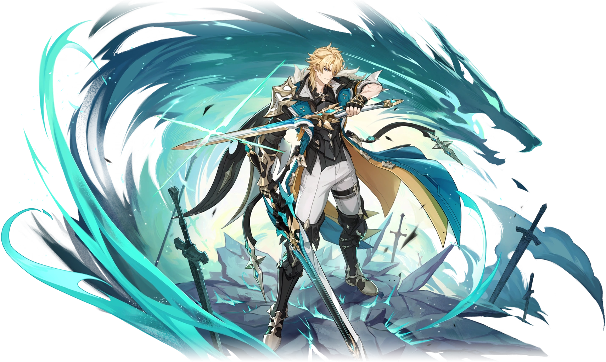

Магистр Ордо Фавониус, Рыцарь Бореалис, защитник Мондштадта.

Варка — великий магистр Ордо Фавониус, известный как Рыцарь Бореалис. Долгое время он возглавлял дальнюю экспедицию, оставив Мондштадт в руках Джинн.Его созвездие — Волк.